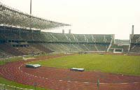
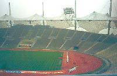

|
|
|
|
 Sommerlekene i 1936 med olympiastadion i Berlin (t.v. slik den så ut fram til 1990-tallet) som hovedarena ble et vendepunkt for den olympiske bevegelsen. Selvfølgelig bestod IOK i utgangspunktet av menn fra de øverste lag av befolkningen som hadde som mål å "foredle" og gjerne også disiplinere folket, men nazistene syntes dog å gå et stykke for langt for dem. Nazismen var egentlig en bevegelse med utgangspunkt i den voksende middelklassen. Den brukte primitiv terror for å undertrykke meningsmotstandere, forherliget sin egen nasjon og rangerte folk etter suspekte raseteorier. Alt dette var klare brudd på idealene i det olympiske charteret. Den olympiske bevegelsen mistet noe av sin "uskyld" under lekene i Tyskland i 1936. De tyske nazistene var ikke de siste som ville utnytte OL i politisk sammenheng. Den permanente rivaliseringen under den kalde krigen er viet et eget kapittel i denne presentasjonen. Her følger en del eksempler på at OL er brukt som politisk arena i ulike sammenhenger, for undertrykkere så vel som for de undertrykte, eller at IOK eller arrangører har måttet fatte vedtak med politiske konsekvenser: |
| 1916 |
OL i Berlin kunne ikke gjennomføres pga. første verdenskrig |
| 1920 |
Taperne fra første verdenskrig, Tyskland, østerrike, Ungarn og Tyrkia ble ikke invitert til å delta i de første lekene etter krigen - til tross for fredsavtalen i Versailles året før. |
| 1936 |
Tilfeldigvis hadde Tyskland blitt tildelt både vinter- og sommer-OL før Hitlers maktovertakelse i 1933, men da nazistene først hadde fått disse arrangementene i "gave", prøvde de å utnytte dem, og da særlig sommerlekene, så langt det lot seg gjøre. Noen riper i lakken var det nok før det hele startet. Enkelte land ønsket å boikotte lekene, men IOK gikk sterkt imot. Arbeider-OL i Barcelona ble av enkelte sett på som et alternativ til Berlin-OL, men til slutt dukket stort sett alle land opp. Det ble faktisk satt en suveren deltakerrekord både i Garmisch-Partenkirchen og i Berlin, både hva antall deltakere og deltakerland angår. (Og når det gjelder arbeiderlekene, måtte de avlyses pga. den spanske borgerkrigen.) En flau sak var at IOK måtte presse Tyskland til å la jødene stille opp på det tyske laget. Propagandaministeriet under Goebbels' ledelse sørget ikke uventet for et velregissert show, rutinert som det var med store massearrangementer. En uberegnelig faktor var de nærmere 4000 tilreisende deltakerne, som selvfølgelig ikke var like disiplinerte og lydige som den hjemlige befolkningen, men alt gikk ganske greit, og noen hilste til og med Føreren. Det relativt nye filmmediet var en av Goebbels' store lidenskaper, og Leni Riefenstahls olympiafilm ble et viktig ledd i propagandaen. Føreren selv kom og kastet glans over arrangementene og foretok bl.a. den høytidelige åpningen ved begge anledninger. Nazistene var ikke bare opptatt av å gi et glansbilde av Tyskland etter maktovertakelsen, de ønsket også å bevise den ariske rases overlegne kvaliteter. En stygg strek i regningen var derfor den amerikanske negeren Jesse Owens' fire gullmedaljer i oppvisningsstil. Den hardeste konkurenten i lengde, tyskeren Lutz Long, fortjener hederlig omtale. Han assisterte nemlig Owens i tilløpet, slik at sistnevnte ikke ble slått ut. Siden holdt de kontakt, inntil Lutz Long opplevde den samme skjebnen som mange andre unge tyskere, også fremragende idrettsfolk: Han falt i kampene på østfronten. Familiene til de to konkurrentene og vennene hadde også kontakt etter krigen. |
1940 |
Planlagte OL i Sapporo og Tokyo kunne ikke avholdes pga. krigen. |
| 1944 |
Planlagte OL i London og Cortina kunne ikke avholdes pga. krigen. |
| 1948 |
Som etter første verdenskrig fikk ikke Tyskland lov til å delta, verken i sommer- eller vinter-OL, heller ikke Japan. Den tredje aksemakten, Italia, slapp derimot inn i varmen. |
| 1956 |
Mange mente at lekene i Melbourne ikke burde gjennomføres med bakgrunn i begivenheter på den storpolitiske arenaen med Suez-krigen i Midt-østen og sovjetarmeens brutale nedslakting av ungarernes opprør. Lekene ble imidlertid avviklet etter planen, og mange gledet seg spesielt over Ungarns sterke innsats. Etter vannpolofinalen mellom nettopp Ungarn og Sovjetunionen var det ikke bare vannet som rant av spillerne... |
| 1968 |
Før lekene startet, hadde IOK forsøkt å få med raseskillestaten Sør-Afrika, men måtte gi seg etter protest fra øvrige afrikanske land. I Norge bl.a. ble det ymtet frampå om utelukkelse av Sovjetunionen og andre land fra Warszawa-pakten, som hadde knust "Praha-våren". Da lekene startet i Mexico, virket det som om denne saken var ute av verden, inntil den tsjekkoslovakiske turndronningen Vera Caslavska gav gullmedaljene sine til de politikerne som hadde ledet an i forsøket på å innføre demokrati i hjemlandet. Ellers hadde mange lagt merke til at flere av de fargede amerikanerne stilte i svarte strømper. Under seiersseremonien på 200m stilte gullvinner Tommie Smith og bronsevinner John Carlos også med svarte hansker. Da nasjonalsangen ble spilt, holdt de knyttneven i været for å markere negrenes vilje til å kjempe for rettighetene sine. Dette ble for sterkt for ledelsen i USAs tropp, som straks sendte de to hjem. |
| 1972 |
 Lekene i München skulle bli de kanskje mest tragiske i historien. Palestinske "Svart September" brøt seg inn i den israelske leiren og tok store deler av troppen til fange. Etter at det tyske politiet hadde forsøkt å befri dem på flyplassen i München, lå det igjen 11 døde israelere, fem døde palestinere og en tysk politimann, som hadde mistet livet i skuddvekslingen. Etter et opphold på én dag fortsatte lekene... |
| 1976 |
Afrikanske land boikottet lekene i Montreal som protest mot at New Zealand fikk delta til tross for idrettssamarbeid med Sør-Afrika. |
| 1980 |
USAs president Jimmy Carter oppfordret til boikott av sommer-OL i Moskva som en reaksjon på Sovjetunionens krigføring i Afghanistan. USA, Vest-Tyskland, Japan - og Norge - var blant dem som holdt seg hjemme. |
| 1984 |
Sovjetunionen, deres nærmeste allierte i øst-Europa med idrettsgiganten DDR i spissen og enkelte andre land, f.eks. Cuba, boikottet lekene i Los Angeles. Offisielt ble manglende sikkerhetstiltak oppgitt som grunn. |
| 1992 |
IOK kom i et dilemma pga. av FNs kulturboikott av Jugoslavia som følge av den brutale borgerkrigen. Det endte med at enkeltutøvere fikk stille som "uavhengige", mens lag måtte holde seg hjemme - til stor glede for Norges håndballjenter... |
| 1994 |
Arrangørene av Lillehammer-OL hadde lagt opp til at ilden fra Morgedal skulle smelte sammen med ilden fra Olympia som en symbolsk markering av at vinterlekene var en kombinasjon av antikkens olympiske idealer og norsk skitradisjon. Etter diverse diplomatiske runder med Hellas ble det klart at ilden fra Morgedal måtte slokkes da den ankom OL-byen. |
| 2000 |
For Australias urbefolkning var det en viktig symbolsk markering at Cathy Freeman fikk tenne den olympiske ilden i Sydney. |
| |
| |
| |
| |
| |
| |
| |